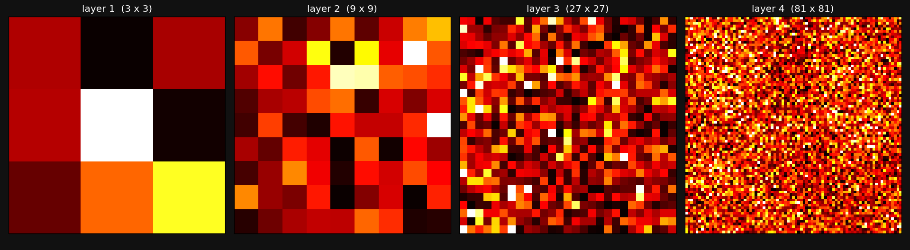

Hierarchical Sandpile Model
A multiscale sandpile automaton with stochastic cascades between nested lattice layers.
Classical sandpile models (in the tradition of Bak, Tang, and Wiesenfeld) place grains on a single lattice and topple any site that exceeds a threshold, producing avalanches with scale-free statistics. This project generalizes that picture to a hierarchy of lattices: layer $n$ is a $3^n \times 3^n$ periodic grid, so each cell at one scale sits above a $3 \times 3$ block of children at the next finer scale, down through five layers.
A cell on layer $n$ topples when its load exceeds the scale-adjusted threshold $C / 3^{2n}$. When it topples, its entire load is redistributed stochastically: a fraction set by the viscosity $\nu$ cascades down to its nine children on the finer layer, the remainder spreads to its eight lateral neighbors, and in both cases the split among recipients is drawn from a symmetric Dirichlet distribution, so no two avalanches are identical. A friction coefficient removes a fixed fraction of the moved load at every topple (optionally recycled back to the coarsest cell to conserve total mass), and the finest layer can only spread laterally, acting as the dissipative floor of the hierarchy.
The driver script loads the single coarsest cell and sweeps the $(\nu, \text{friction})$ parameter plane, recording how long each cascade takes to reach a steady state — probing how transport between scales and dissipation within scales compete to set the relaxation time.

Run the model
The simulation below is the same model running live in your browser (a
direct JavaScript port of update() from the script, including
the Dirichlet-distributed cascades). Each panel is one layer of the
hierarchy, from the single driver cell on layer 0 down to the
$81 \times 81$ floor; brightness shows the load in each cell, scaled per
layer. Load is injected at the top at a steady rate, topples cascade
laterally and downward, and friction bleeds energy out of every topple
(optionally recycled to the top to conserve mass).
Source code
- sandpile.py — the hierarchical sandpile model and the viscosity–friction relaxation-time sweep